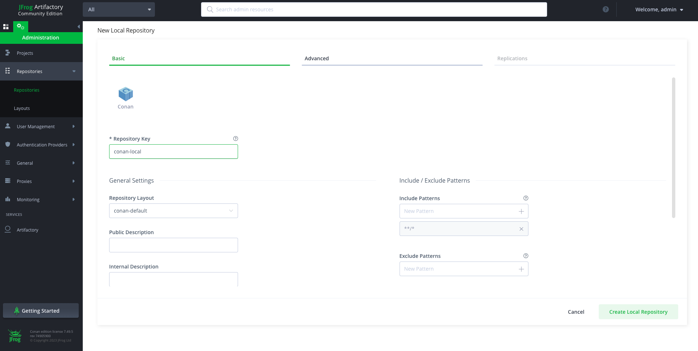

Conan¶
Conan 是一个 C/C++ 的包管理器，支持多个平台和构建系统，目前已经更新到了 2.3.0 版本，官方文档：https://docs.conan.io/2/index.html。
Conan 的特点有：
- 与原生的依赖系统解耦，不引入额外负担
- 兼容多种构建系统，包括 CMake、Visual Studio、Bazel、Meson等
- 统一的包管理方式(中心仓库)
- 支持交叉编译环境
- 自动查找包的依赖关系
Conan 的设计理念与 git 非常类似，用一个中心仓库存储所有的包，用户从仓库拉取或者上传包，而编译则放在本地执行。官方仓库地址为：Conan Center，企业用户也可以部署自己的私有仓库。
常用命令¶

使用包¶
Profile¶
Conan profiles allow users to set a complete configuration set for settings, options, environment variables (for build time and runtime context), tool requirements, and configuration variables in a file.
在使用 conan 管理包之前，必须先配置 profile 文件。conan profile detect用来生成当前环境的默认配置文件：
$ conan profile show
Host profile:
[settings]
arch=x86_64
build_type=Release
compiler=gcc
compiler.cppstd=gnu17
compiler.libcxx=libstdc++11
compiler.version=11
os=Linux
Build profile:
[settings]
arch=x86_64
build_type=Release
compiler=gcc
compiler.cppstd=gnu17
compiler.libcxx=libstdc++11
compiler.version=11
os=Linux
与 profile 相关的命令有：
$ conan profile -h
detect Generate a profile using auto-detected values.
list List all profiles in the cache.
path Show profile path location.
show Show aggregated profiles from the passed arguments.
交叉编译¶
conan install命令可以指定 profile 文件，例如：conan install . -pr:b=default -pr:h=raspberry。这条命令告诉 conan 交叉编译的配置：default 用于编译环境，raspberry 用于执行环境。
[settings]
os=Linux
arch=aarch64
compiler=gcc
build_type=Release
compiler.cppstd=gnu14
compiler.libcxx=libstdc++11
compiler.version=9
[buildenv]
CC=arm-linux-gnueabihf-gcc-9
CXX=arm-linux-gnueabihf-g++-9
LD=arm-linux-gnueabihf-ld
conanfile.py¶
conanfile.py是 conan 的核心文件，一个简单的示例文件如下：
from conan import ConanFile
from conan.tools.cmake import cmake_layout
class MyFile(ConanFile):
settings = "os", "compiler", "build_type", "arch"
generators = "CMakeToolchain", "CMakeDeps"
def requirements(self):
self.requires("zlib/1.2.11")
def build_requirements(self):
self.tool_requires("cmake/3.22.6")
# using cmake layout
def layout(self):
cmake_layout(self)
setttings：整个项目的编译环境，比如编译器、操作系统、架构等generators：指定生成器，比如 CMakeToolchain、CMakeDepsrequirements：依赖的库，比如 zlibbuild_requirements：构建工具，比如 cmakelayout：指定生成的目录结构，这里使用 cmake 布局
创建包¶
部署私有仓库¶
如果企业想要自己管理所有包，那么可以部署企业私有仓库。Conan 官方建议选择使用 Artifactory 作为私有仓库，它的下载地址是：https://conan.io/downloads。你也可以使用 docker 命令一键启动：docker run --name artifactory -d -p 8081:8081 -p 8082:8082 releases-docker.jfrog.io/jfrog/artifactory-cpp-ce:7.63.12。
启动 docker 后，登录到默认的 http://localhost:8081界面，默认用户名和密码为 admin: password。其界面如下所示：

然后，你需要在页面中创建新的 repository，再将 Artifactory 仓库的地址添加到 conan 中：
此时再查看远程仓库，发现多了一个 artifactory 仓库：
$ conan remote list
conancenter: https://center.conan.io [Verify SSL: True, Enabled: True]
artifactory: http://localhost:8081/artifactory/api/conan/conan-local [Verify SSL: True, Enabled: True]
配置登录信息：
现在，你可以通过 conan upload 命令上传自己的包到 artifactory 仓库：